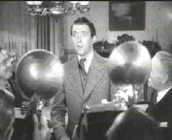

|
Mr.
Smith Goes to Washington(SE)/A,B+ |
|
Columbia/1939/130m/FS
1.33/BW |
No
matter how many times I see this film it never fails to
bring tears to
my eyes or choke me up at various moments. The exact scene is
not quite predictable and I can’t be sure if it’s
"sense memory" bringing me back to
an earlier time when the cynical strains of adulthood hadn’t
yet taken over my being. Smith is a fresh experience for me each time. I have never marveled
quite so at the brilliance of James Stewart as the wide-eyed
Senator. I just sort of took his passion for granted. It is a
brilliant performance. This great film ranks
amongst my favorites.
|
 |
| Smith
meets the Press. ©Columbia |
Mr.
Smith
Goes
to
Washington
was a very controversial film in its day. Filmed with war raging
in Europe, many were sensitive to
director Capra’s portrayal of corruption in Washington's highest places. Good triumphs over evil at the conclusion of the
film, but the queasiness over the extent of political corruption
is forever an unsettling reminder of what goes
on behind closed doors in the power centers of our country.
Director Frank Capra got it just right
with Mr.
Smith
Goes
to
Washington.
Capra combines charm, humor, drama, and Americana brilliantly.
No element of this film is out of harmony. Sentimental scenes of
Jeff Smith contemplating the world in the shadow of the Lincoln Memorial
are balanced by a delicious bit of business with a hat as Smith
meets socialite Susan Paine. Capra’s actors are at their best
in Mr.
Smith
Goes
to
Washington.
Alongside Stewart’s great work, Jean Arthur brings her cynical
screen siren to
delightful life. Claude Raines’ eloquent delivery of dialogue
as Senator Joseph Paine resonates with the haunting beauty of
loss. Edward Arnold is equally brilliant as bullying political
boss Jim Taylor, Thomas Mitchell compliments Arthur’s work
wonderfully as correspondent Diz Moore, and Harey Carey brings a
generous helping of humanity to
the role as Vice President.
It's wonderful to watch a classic like Mr.
Smith Goes to Washington looking better than I have ever
seen it. The transfer from Columbia is mostly very sharp and
the contrast is just right with the black and white palette
presented full range. A number of choppy
splices and a few scenes that are too soft. Element
damage is mostly confined to specks of dirt or an errant scratch, and it never gets in the
way of the pure pleasure provided by this beautiful film. The mono sound
is steady with no distortion or hiss.
Packaged as a special edition, Mr.
Smith Goes to Washington includes an audio commentary from Frank
Capra, Jr., the director's son. Capra's memories of his father's
style and feelings about the actors is delivered with casual
elegance. Capra is easy listening, and you get wonderful
insights into Harry Carey as the Vice President of the Senate or
Edward Arnold
as boss Jim Taylor. Capra's
relationship with his actors is brought to t he forefront time
after time. You come away feeling the secret to Capra is the way
he works with actors, but don't that fool you because Capra knew
story and delivered it magnificently. There's also a short about
the making of the movie, hosted by Capra Jr., with comments over
the clips from the film. It's very brief and adds nothing that
isn't on the commentary track. Trailers for Smith, Lost
Horizon and It Happened One Night are included in the
package and well as some publicity art.
Mr.
Smith Goes to Washington is as timely today as it was 60-odd
years ago. It's a film that should be seen be every school child
and cherished as part of
our heritage.
|

Selections from the feature archive
include articles on
Akira Kurosawa, Frank
Darabont, Blonde
Bimbos, Hollywood
Street Gangs, or Vietnam:
The Hollywood Pariah, and many more....

Preston Sturges was Hollywood's resident comic genius for more
than a decade. His movies are timeless. Click on his image to read
all about it.

The
Movie Poster Archive include extensive poster images from the
films of stars like Susan Hayward, Kirk Douglas, Katharine
Hepburn and many more. This month's featured star is James
Stewart
Imaging
Science Foundation
The Imaging Science Foundation promotes
proper standards in home theater viewing. ISF trained
technicians offer monitor calibration services to consumers. The
difference in a properly calibrated monitor can be
astounding. Click on the image to find an ISF member near you.
HOT
LINKS
DVD
Verdict
They may be judgmental, but
that's the point, isn't it. Lots of DVD reviews plus news and
more
The
Home Theater Forum
Looking for lively and helpful
exchanges on home theater, DVD, movies. Visit this friendly site
and get a hardy welcome.
Home
Theater Reference Reviewing System

When you read a DVD review it's of utmost importance to know
what equipment is being used to evaluate quality. Click on the
projector to find out more.
|